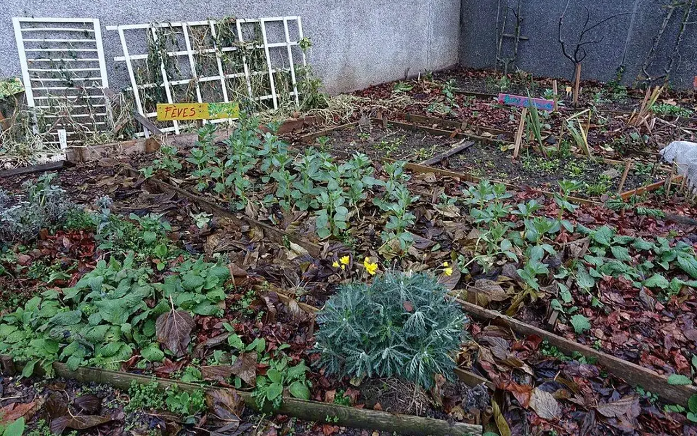
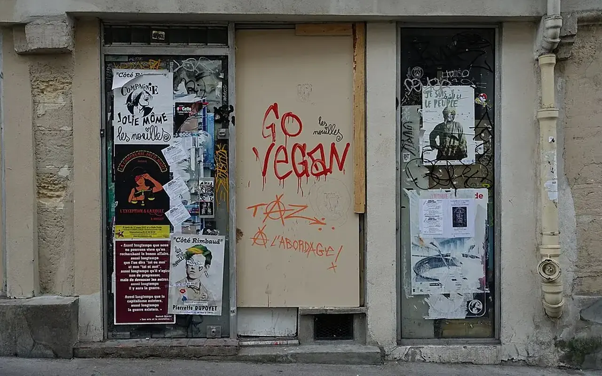

Dossier public
Commerces inoccupés
Réactiver les cellules commerciales vides pour soutenir la vie locale et les usages de proximité.
Cette action prépare la remise en mouvement des rez-de-chaussée fermés et locaux disponibles, avec des usages adaptés aux besoins des habitants et à la capacité réelle des territoires.

Exemple de reconversion
Une cellule fermée peut devenir boutique test, atelier partagé, permanence associative ou point de services.

Impact économique local
Réactiver un local contribue à la visibilité d'une rue, à l'activité de proximité et à la confiance des habitants.
Indicateur documenté après recensement.
Documentation ouverte quand les projets seront lancés.
Suivi ouvert avec les partenaires compétents.
Mesure territoire par territoire territoire par territoire.
Peut-on proposer un local fermé ?
Oui, via la page contact, avec adresse, état général et coordonnées de contact.
Les usages sont-ils décidés à l'avance ?
Non. Ils doivent répondre aux besoins locaux et aux contraintes du local.
Participer à cette action
Commerces inoccupés : une question de centralité, d’emploi et de qualité de vie
La fermeture d’un commerce n’est jamais seulement une vitrine vide. Elle signale souvent une fragilité plus large : baisse de fréquentation, concurrence périphérique, changement des habitudes d’achat, difficulté de transmission, loyers inadaptés, locaux obsolètes, manque d’habitants dans le centre ou perte de services publics de proximité.
Les programmes nationaux de revitalisation montrent que le commerce est indissociable de l’habitat, de l’espace public, de la mobilité et de la présence d’activités. Action cœur de ville intègre explicitement le développement économique et commercial dans ses axes, tandis que Petites villes de demain cible les centralités de moins de 20 000 habitants.
Le commerce de proximité dépend d’un écosystème : logements occupés, flux piétons, stationnement, accessibilité, pouvoir d’achat, qualité de l’espace public et loyers. Une cellule commerciale dégradée ou trop grande pour un entrepreneur local reste souvent fermée même lorsqu’un besoin existe.
TVF peut recenser les locaux, qualifier leur état, identifier les usages possibles, mettre en relation propriétaires et porteurs d’activités, organiser des occupations temporaires, intégrer la rénovation légère et faciliter l’émergence de tiers-lieux, ateliers, boutiques éphémères ou services associatifs.
Carte des cellules commerciales à qualifierCouche prévue : locaux fermés, rez-de-chaussée actifs, proximité des logements vacants, accessibilité, usages possibles.
Exemple fictif à visée pédagogiqueUne ancienne boutique fermée depuis plusieurs années pourrait devenir atelier partagé pour artisans, avec une phase test de six mois et un loyer solidaire. Exemple fictif : il sert à expliquer une option de reconversion, pas à annoncer un projet existant.
Pourquoi l’habitat compte-t-il pour le commerce ?
Un centre habité crée des flux quotidiens, sécurise la rue et soutient les achats réguliers.
Un commerce fermé doit-il toujours redevenir un commerce ?
Pas nécessairement. Certains locaux peuvent accueillir un atelier, une association, un service, une formation ou un usage temporaire.
Comment éviter les faux espoirs ?
En vérifiant l’état du local, les contraintes de bail, le coût de remise en état et la demande réelle avant communication.
Sources citéesANCT, Action cœur de villeANCT, Petites villes de demain
Commerces inoccupés : réactiver les rez-de-chaussée utiles
La vacance commerciale se mesure difficilement sans périmètre précis. TVF ne publie pas de taux sans relevé daté, mais peut aider à qualifier les cellules fermées, leurs usages possibles et les conditions de retour à une activité locale.
Causes à analyser
Un commerce fermé doit être analysé avec son bail, son emplacement, son loyer, son état, le flux piéton et les besoins du centre-ville.
Solution TVF
TVF structure la réactivation : repérage du local, lecture commerciale, recherche de porteurs, usages temporaires et coopération avec les acteurs locaux.
Cas type : cellule commerciale fermée
Un local vide peut être testé pour une activité de proximité, un atelier, une association ou un tiers-lieu temporaire si l'accès, la sécurité, le bail et les charges sont compatibles.
Exemple fictif à visée pédagogique, non présenté comme une réalisation TVF.
Statut de publication : un local commercial ne devient public qu'après accord de diffusion, qualification du propriétaire et lecture du potentiel d'usage.
Signaler un commerceLecture opérationnelle
Comprendre rapidement Commerces inoccupés
| Question | Réponse TVF | Preuve ou livrable attendu |
|---|---|---|
| Quel besoin traite la page ? | Qualifier une situation territoriale avant de proposer une action. | Fiche de lecture, diagnostic ou formulaire adapté. |
| Quels acteurs sont concernés ? | Collectivités, propriétaires, entreprises, associations, financeurs ou citoyens selon le sujet. | Interlocuteur identifié, rôle clarifié, accord de publication si nécessaire. |
| Comment passer à l'action ? | Documenter le besoin, choisir le parcours, rassembler les pièces et cadrer les responsabilités. | Fiche projet, convention, budget, calendrier et indicateurs. |
Commerce et centralites
Du constat à l'action : Commerces inoccupés
Cette page explique comment une vitrine fermee peut redevenir un support d'activité locale.
Problème
Un local ferme fragilise l'image d'une rue, reduit les flux et accentue le sentiment de declin.
Donnée utile
Repere public : les programmes de revitalisation comme Action cœur de ville ciblent les centralites fragilisees.
Solution TVF
TVF aide à qualifiér le local, son etat, son potentiel d'usage et les acteurs capables de le reactiver.
Méthode
Chaque scenario distingue commerce durable, occupation temporaire, atelier, service local ou lieu associatif.
Acteurs
Propriétaires, collectivités, chambres consulaires, artisans, entrepreneurs, associations et financeurs.
Impact visé
Redonner une fonction visible aux rez-de-chaussee et renforcer l'attractivite de proximité.
FAQ
Questions fréquentes sur cette action
Commerces inoccupés clarifie les conditions de réactivation des locaux commerciaux et les acteurs à associer.
Un commerce fermé peut-il changer d'usage ?
Oui. Commerces inoccupés étudie cette possibilité si le local, le bail, la copropriété, la règlementation et le besoin local le permettent.
Qui doit être associé ?
Pour Commerces inoccupés, propriétaire, commune, EPCI, chambres consulaires, artisans, commerçants, associations de centre-ville et porteurs d'activité peuvent être mobilisés.
Quel est le premier critère de réussite ?
Pour Commerces inoccupés, la priorité est de relier un local disponible à un besoin réel, un porteur fiable et un modèle économique soutenable.
Passer à l’action
Choisir le parcours adapté à votre rôle
Chaque demande doit être orientée vers un cadre clair : besoin territorial, propriétaire, ressource, financement, bénévolat ou coopération institutionnelle.